Digital Image Processing - Compression 2017
We do compress an image to minimize the number of bits in an image
- while being able to reconstruct original image exactly (lossless)
- while maintaining a reasonable quality of the reconstructed image (lossy)
- Signals have statistical redundency or structure (spatial, spectral, or temporal) in the data.
- The are perceptually not useful information either because we cannot see or hear. So, we can throw such irrelevant data.
The picture below shows simplified cross section of the human eye. We have the cornea, the lenses, and the retina. The retina is where the images that we see are projected on, and then they are sent into the brain.
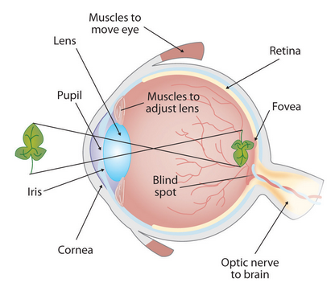
The retina is full of sensors, all over the retina.
The retina contains two major types of light-sensitive photoreceptor cells used for vision: the rods and the cones. We see a very high peak of cones around the fovea. The fovea is basically where we can see the best. Cones are very good at seeing details, especially in bright light. Actually, cones are responsible for color vision. They require brighter light to function than rods require. We're always trying to move our eyes, such that the scene is projected as much as possible into the fovea region of our retina. The amount of cones, the amount of receptors goes down when we get away from the fovea.
There is another type of receptors (sensors) which are called the rods. The rods are marked in this .. picture with dashed lines. As we can see, the concentration of the rods is more uniform across the whole retina.
The cones that are very good at seeing at bright light and they are concentrated around the fovea. The rods which are spread all around the retina and are very good at seeing at very low light. In other words, rods cannot distinguish colors, but are responsible for low-light (scotopic) monochrome (black-and-white) vision.
Note that there's a region in the retina that has no sensors, and it is called the blind spot with no receptors.
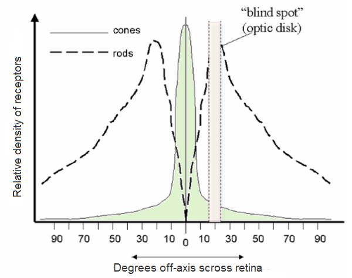How we store the pixel values. We can select the color space and the data type used. The color space refers to how we combine color components in order to code a given color. We have couple of methods and each of them breaks it down to three or four basic components and we can use the combination of these to create the others.
- The most popular one is RGB, mainly because this is also how our eye builds up colors. Its base colors are red, green and blue. To code the transparency of a color sometimes a fourth element: alpha (A) is added.
- The HSV and HSL decompose colors into their hue, saturation and value/luminance components, which is a more natural way for us to describe colors.
- YCrCb is used by the popular JPEG image format which we will discuss in later section of this chapter.
- CIE L*a*b* is a perceptually uniform color space, which comes handy if we need to measure the distance of a given color to another color.
The JPEG compression is a block based compression. The data reduction is done by the subsampling of the color information, the quantization of the DCT-coefficients and the Huffman encoding.
JPEG typically achieves 10:1 compression with little perceptible loss in image quality, and is the file type most often produced in digital photography or computer screenshots.- wiki
The representation of the colors in the image is converted from $RGB$ to $Y'C_bC_r$, consisting of one luma component ($Y'$), representing brightness, and two chroma components, ($C_b$ and $C_r$), representing color. This step is sometimes skipped. The resolution of the chroma data is reduced, usually by a factor of 2. This reflects the fact that the eye is less sensitive to fine color details than to fine brightness details. In other words, the color information ($C_b$ and $C_r$) can be sub-sampled without a significant loss of visible image information as illustrated in the picture below.

Picture source: wiki
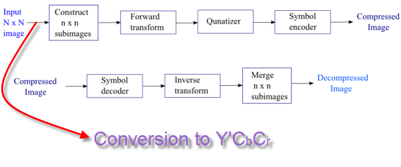
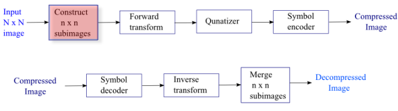
We usually use $8\times 8$.
Why 8?
We make subimages to make it faster to process, and it turned out 8 to be a sort of magic number in a sense that it produces results close to Karhunen-Loeve theorem (it yields the best basis that minimizes the total mean squared error):
$$MSE = \left[\frac{1} {\text{# of pixels}} \sum_{pixels}(\hat{f}-f)^2 \right]^{\frac12}$$
where $\hat{f}$ is the reconstructed image and $f$ is the original image.
The $Y$, $C_b$, and $C_r$ data in the $8\times 8$ pixels block undergoes the Discrete Cosine Transform (DCT).
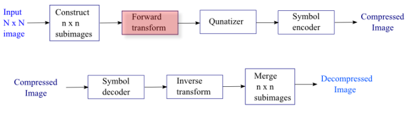
The DCT constructs linear combinations of the basis shown below.
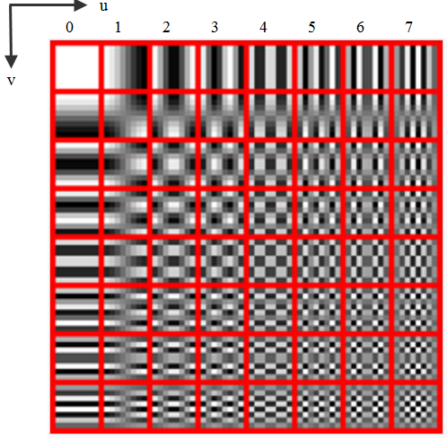
In the spatial domain (before DCT), the data is described via digital value for each pixel and we represent the image by a list of pixel values. After the transformation, the image is described by the coefficients of the spatial frequencies for vertical and horizontal orientation. So, we still have to store 64 frequency coefficients after DCT. This means no data reduction with DCT. To reduce the amount of data to store the 64 coefficients, we do quantize them as described in next section.
The following picture demonstrates how we can decompose an image into bases images ( (8 x 8 gray scale smile face decomposed in Hadamard bases)

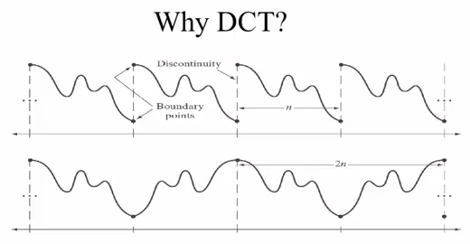
The Fourier Transform is assuming periodicity (top picture) at the boundary of each block, which is not realistic because the neighboring pixel tends to be drastically different. However, if we use DCT, we get the similar neighboring pixels (bottom picture Markovian image).
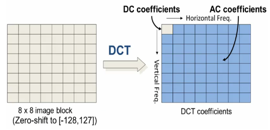
As shown in the picture, the image (left) to be encoded is first divided into 8 by 8 blocks. The blocks are zero-shifted, so they range from minus 128 to 127, for an 8-bit per pixel image. Then the discrete cosine transform is taken of each and every block. The picture on the right side shows the DCT coefficients. The zero zero coefficient is referred to as the DC coefficient, while the rest are referred to as AC coefficients, an analogy from direct current and alternating current.
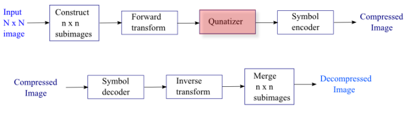
The amplitudes of the frequency components (for example, values in the range of 0-255) are quantized.
 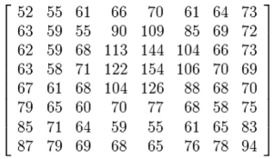
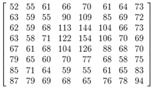
Human vision is much more sensitive to small variations in color or brightness over large areas than to the strength of high-frequency brightness variations. Therefore, the magnitudes of the high-frequency components are stored with a lower accuracy than the low-frequency components. The quality setting of the encoder affects to what extent the resolution of each frequency component is reduced.
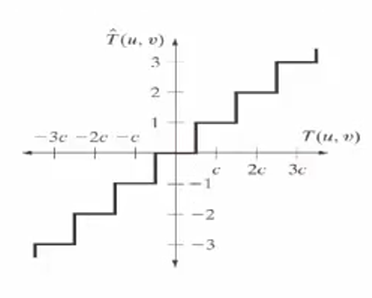$$T(u,v) = \sum_x \sum_y F(x,y) r(x,y,u,v)$$, where $T(u,v)$ is the coefficients of each pixel in the block, $F(x,y)$ is our image, and $r(x,y,u,v)$ is the basis shown in step 3 DCT. So, after the quantization ($\hat{T}$), we get the reconstructed image ($\hat{F}$):
$$\hat{F}(x,y) = \sum_u \sum_v \hat{T}(u,v) r(x,y,u,v)$$.
Most of the times, the user can define the strength of the JPEG compression. The quantization is the step where this user information has influence on the image quality and file size.
The resulting data for all $8\times 8$ blocks is further compressed with a lossless algorithm, a variant of Huffman encoding.
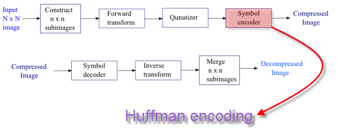
For more on Huffman encoding, please visit
http://www.bogotobogo.com/Algorithms/compression_huffman_encoding.php.
The following pictures are from Fundamentals of Digital Image and Video Processing:

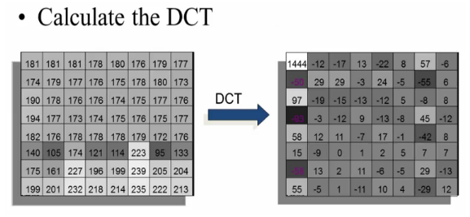
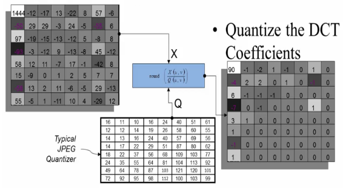

- Digital Image Processing, 3rd ed. Gonzalez & Woods.
- Fundamentals of Digital Image and Video Processing
For image sensors, visit Image Sensors (CCD & CMOS).
Ph.D. / Golden Gate Ave, San Francisco / Seoul National Univ / Carnegie Mellon / UC Berkeley / DevOps / Deep Learning / Visualization